This guide will help you, an NITC student host your own B1s Linux virtual machine on Microsoft Azure, for free.
To get started, you will need to signup for the Github Student Developer Pack. If you don't have one already, create a free Github account. although you can use any email id to signup, use your NITC email id (ending with @nitc.ac.in) so that you won't need to add it later. Once you have an account, request student benefits so that you can avail your free student benefits. The process will require some identification that you're a student, so you will need your ID card. The approval process can take a couple of days, but your request will probably be accepted within a week.
Create an account at Microsoft Azure. Login to the Azure portal with your GitHub account. 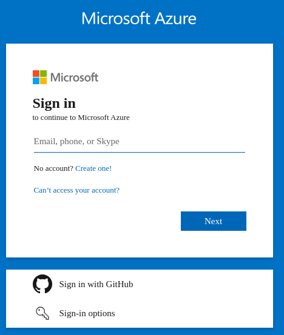
To create the B1s VM(virtual machine), click on the 'Create a resource' button, indicated with a large '+' sign in the homepage. 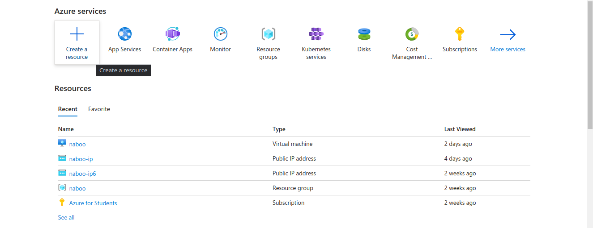 Next, click on the 'Create' button under the 'Virtual machine' heading. 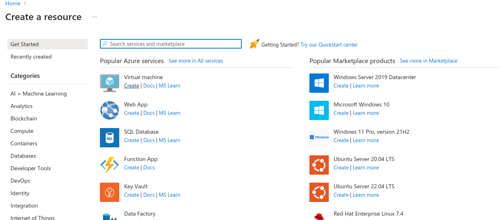
In the 'Basics' tab, click on the 'Create new' button in the 'Resource group' section. In Azure, a 'Resource group' helps manage a group of common services easily. Give the 'Resource group' a name like 'my-vm-group', and click on 'OK'. Under the 'Instance details' sections, give your VM a name, 'my-vm', for example. Choose your region. This is where your VM will be hosted at. Depending on the chosen region, you might not be able to create a B1s VM in a given zone. In that case, change your zone to a different one. But make sure you select a single zone, otherwise you will prompt the create of multiple VMs. 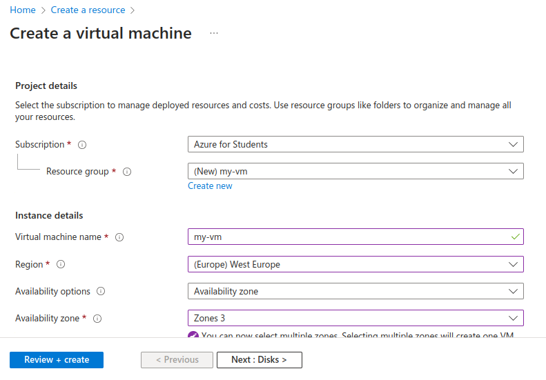
Then, select the OS that your VM will run. For the sake of simplicity, I will select Ubuntu[^1] Server 22.04 LTS, although you can select a different one (yes, even Arch Linux). Make sure that the VM architecture is x64. Arm64[^2] VMs may not be able to run all the software you want. Also ensure that the 'Size' is set to 'Standard_B1s'. This is free VM offered by the 'Azure for Students' subscription. 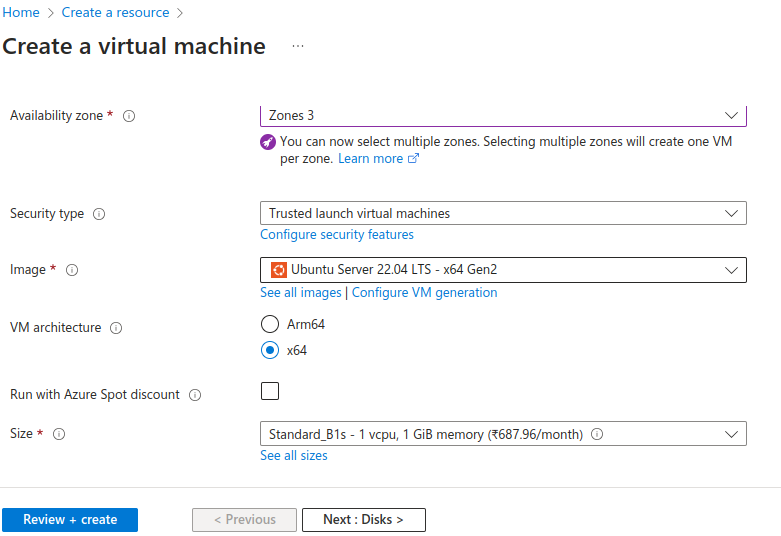
Under the 'Administrator account' section, use the defaults - SSH public key, Generate new key pair. Take a note of the username, which is 'azureuser' by default. The SSH public key will be used to authenticate to your server's SSH[^3] server. Continue with the defaults for 'Inbound port rules', allowing SSH at port 22. 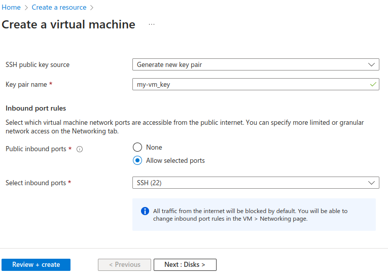
Click on the 'Next: Disks >' button near the bottom left of the webpage. Let all the defaults be, although you can upgrade the OS disk size to a 64 GiB one if you wish to do so, for free. 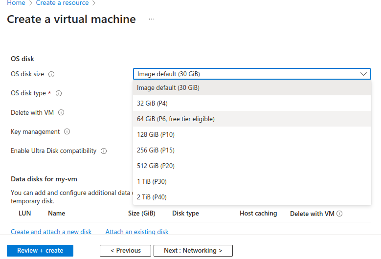
Continue clicking 'Next', leaving the defaults as is, till you reach the 'Review + create' tab, where once you have verified all the options, click on the blue 'Create' button near the bottom left of the webpage. 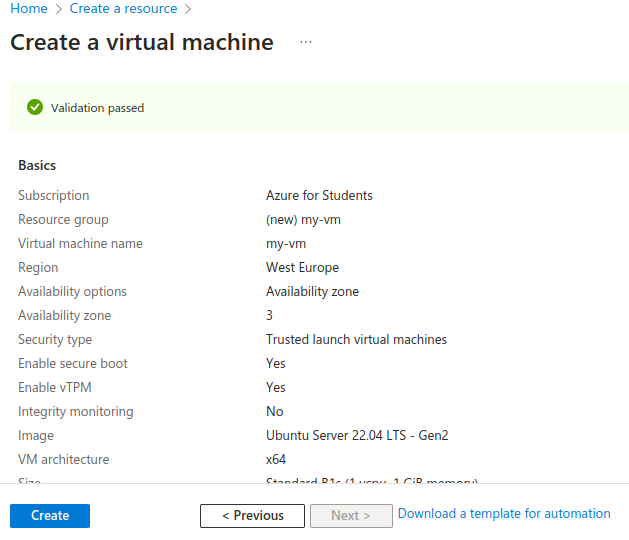
You will now be shown a pop-up asking you to download the private key and create the VM resource. Click on the blue download button to continue. Make sure to save the 'key.pem' file, you will need it later for SSH authentication. 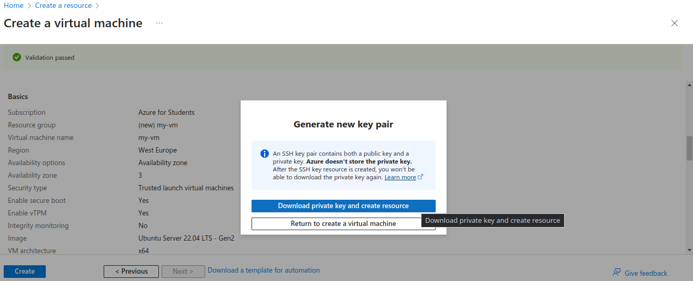
Next, you will be shown a loading page saying that the deployment is in a progress, and in less than a minute later, the VM should be ready. 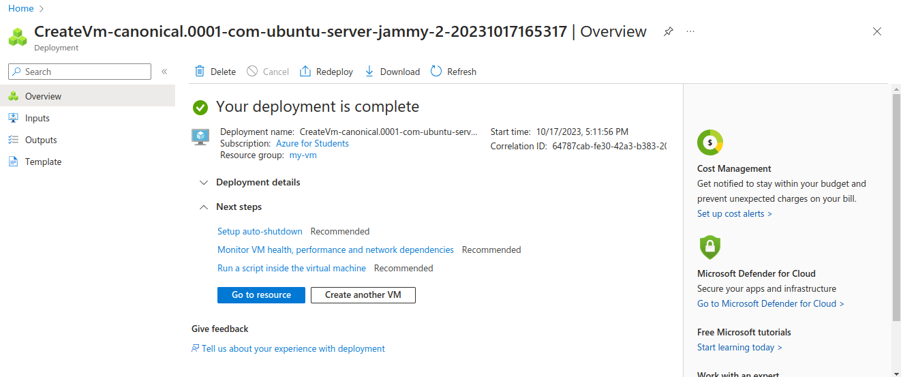
Navigate back to the homepage of the portal by clicking on the 'Home' button at the top left of the webpage, and you should see you newly deployed VM in the 'Recent' tab under the 'Resources' heading. 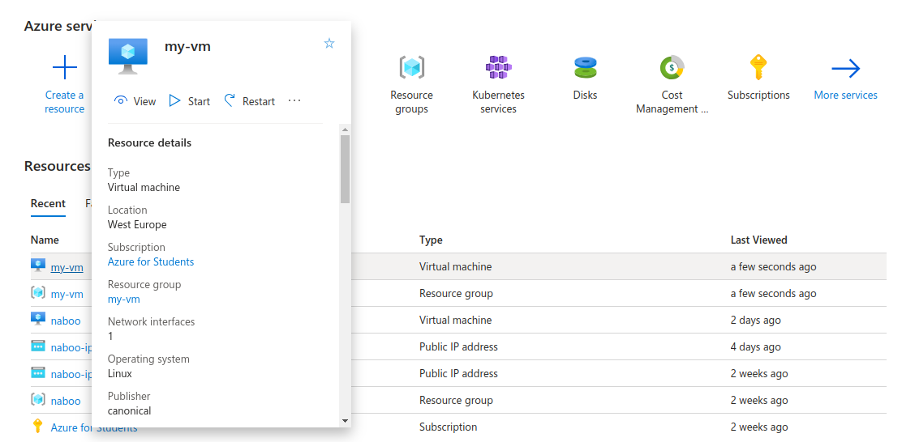
Click on your VM, and copy down its public IP address.
To login to your webserver, you will need an SSH client^4. Use the username you had chosen, which was 'azureuser' by default, and the PEM file you had downloaded previously.
The process of logging in will differ, depending on your chosen client. If have Dropbear/OpenSSH installed for example, then you can use ssh -i /path/to/pem azureuser@ip-address.
Do note that, you will have to modify the permissions on the key file so that it is only readable by you. To do so, run chmod 400 /path/to/pem before attempting to login.
You will also need to agree to verifying the fingerprint when connecting.
On a successful login, you will be greeted with a 'Welcome' on Ubuntu :)
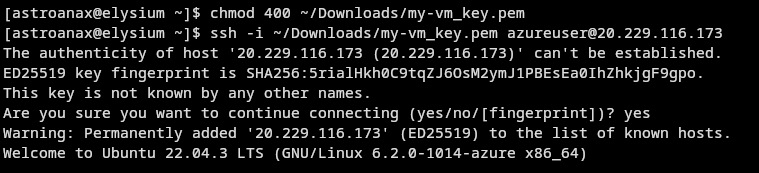
[^1]: Ubuntu is a very popular Linux distribution used on servers. [^2]: Support for ARM is still an issue sometimes, although CPUs using the instruction set are more efficient and faster(most Android phones, and the M1 and M2 chips, for example). [^3]: SSH, which stands for Secure Shell Access/Protocol is a TCP protocol most popularly used to login to remote servers. To learn more about it, read this introduction.